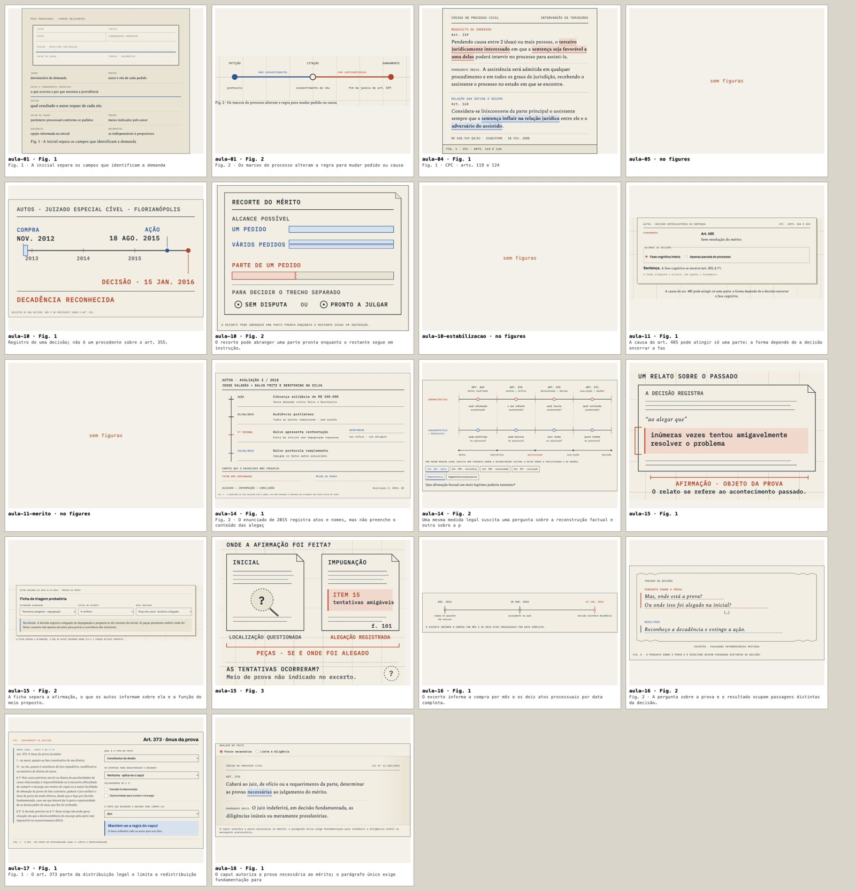

Raw course material goes in one end, a finished course comes out the other. This is every stage in between, what each one is for, the house style it builds toward, and what I'd change.
Each part of the job goes to the cheapest hands that can do it well.
Direction, taste, the decisions that are yours (what a course is for, which variant looks right).
The WHAT: briefs, the house style, rulings on escalations, the read before anything ships for real.
The HOW: splits a brief into stages and workers, runs the checks, merges, keeps the ledger.
Bulk labour. Sol (expensive, careful) only for the course map and the review panel; Luna for everything else.
They coordinate through plain files and GitHub: one issue per stage; a run ledger (RUN-PROC-R2.md) where every result and question lands; the flight log, where every mistake becomes a numbered rule the next wave must apply; BUGS.md (symptom → cause → fix); and CEO.md, the handoff that lets a fresh Claude take the chair cold.
This is the Source Pipeline as Processo Civil is running it now. The order is fixed: understand, prepare the workbench, then write. No stage starts before the previous one passes its check.
Reads the syllabus, the Moodle snapshot and the slide titles. Decides the lessons (one sitting each), what each lets the reader do, which exam it belongs to, which earlier lessons it depends on, and which URLs stay or redirect.
Every file gets a row: role (assigned reading, base book, exam, peer note), fingerprint, text status. Scans are OCR'd locally, never by cloud vision. Duplicates collapse to one row. Anything missing is marked missing and is never filled from memory.
Every book is cut along its own table of contents, with each page marked, so every later quote can be traced to a page.
Every chapter is matched against every lesson: primary, supporting, background or unused, each with a one-line reason. Precision is the point: Aula 09 gets chapter 3 of one book, not whole books. A lesson also inherits the key chapters of the lessons it builds on.
A script stitches each lesson's workbench: slides, primary chapters, supporting, background, exam questions, the CPC articles, plus an index saying where every file came from.
Every question from every past exam, verbatim, with the official answer key, an answer checked against the current CPC, the topic and the lesson. Repeats merge; reworded versions stay linked as variants; exclusions keep their reason.
Before a word is written, the lesson is planned: its function, sections in order with the pages each draws on, every exam question placed, every figure justified, one real case as the thread. A separate panel judges the plan like a thesis committee: APPROVED, or REVISE with at most five points. A second REVISE comes to me.
One agent writes the text and draws the figures together, working from the compendium only, on the staging branch, one PR per lesson. Prototype first, then waves of six.
Added after my read today: the first eleven lessons were clean but bare (almost no source blocks, no marks, few figures). This pass brings each one up to the bar without rewriting it.
The course front draws the professor's semester (for Processo, the procedure itself from petição to prova), and the lesson list follows the professor's weeks.
Both are generated from the exam bank, so every drill is a real exam question.
Staging becomes the live course in one PR, after I read it. It's the one gate we kept. The early release of the front, Aula 01 and the revisão skipped the queue because your exam moved.
| Check | Catches | Blind to |
|---|---|---|
| slop_gate | AI tells in our prose, tuned on 368 human doctrine texts: negated inference ("não basta…"), triads, colon reveals, restating, moral closers | Whether the explanation is any good |
| marks_lint | Misused marks: two holdings in one paragraph, a term with no definition, plain bold | Marks that are missing |
| house_check | Marks, source blocks and figures that are missing; the stylesheet not loaded; an article restated over and over | Whether a figure is good |
| quote_check | A quote that isn't in the source, or a cut with no "[...]" | Whether it's the right passage |
| check_all · breakscan | Broken fronts, links, offline manifest; labels colliding or clipped at 1280 px | Taste |
| figsheet | Every figure on one image, for eyes (built today) | Nothing; it's eyes |
The pattern behind today's problem: every check we had passed on absence. No marks, no mark errors. No quotes, no quote errors. The new rule is that a check has to fail on a known-bad page before its pass means anything.
The Writing Standard, Parts A–G. The rules that matter most:
The lesson is a collage of the real material with our explanation around it. Every quote is verbatim, with a page or article number. The bar on the left says what kind of source it is:
Foreign-language quotes carry a "tradução nossa" toggle. Primary sources (the law, the decision) come first; doctrine interprets them; our prose connects them to the case.
Colour means something. Blue bold is what was decided; orange bold is the limit. Each is capped at one per paragraph and eight words. There's one highlighter per chapter, for the sentence worth memorising. Terms get a dotted underline with their definition on hover, taken from the lesson's own sentence. Plain bold is retired.
Instruments, not diagrams. A figure is a real object (the petição, the case file, the calendar with the deadline counted) or a measured relation. The test: delete every word, and something meaningful should be left. A table in disguise fails, and so does a quoted article dressed as a drawing. Here are today's fifteen Processo figures, the way the new tool shows them:

House paper with a drafting grid, ink, and blue and orange that always carry meaning. The type is Archivo for display, Spectral for reading and IBM Plex Mono for labels. A 1,083 px reading column, calm motion, desktop first.
Each course front has two parts: a planta, a feature drawing curated to that course (a map for Latam, a procedure for Processo), and a register below it, one shared instrument identical on every course. A lesson goes: hero (what it lets you do, reading time, before/after), then numbered chapters each with a one-line lede, figures and source blocks inside the argument, and closing exercises drawn from the real exam bank.
The architecture is sound, and today proved it. Everything I checked traced back to a real page: the exam bank, the quotes in Aula 01, the case threads. The two stages that decide quality (triage and the blueprint panel) are doing their job. The weak link was always the last mile: whether the finished page actually wears the house style, and whether the figures are any good. Two of my ideas below are already done.
The writer picks the passage; a script copies it from the source by page or article and marks any cut. Fidelity stops depending on the model being careful, and Codex's content filter can't block statute text any more.
The contact sheet was your idea, and it's the right one. Every writer runs it before handing in, and I look at one sheet per course instead of forty crops.
You save the Moodle snapshots so we know which resource the professor meant for which week. Today the course map reads them, but triage doesn't treat "the professor put this file under this week" as its own signal. For well-organised courses like Latam, that placement should outrank our own topic matching. It's one column in S0 and one rule in S3.
The style lives in the Writing Standard, STYLE.md, Design Direction, Visual Genres, Visual Casting, the figure kit and the flight log. Writers have to hold all of it. I'd fold the flight-log lessons back into the standards after each course, and make the specimen page the one place that shows every element, with its rule beside it.
Let it run to the end, give it one proper read, write the RETRO, then send the other six courses through the improved line. Copying it now would copy its faults six times.
Flowers, sincerely. Most AI study material is a model summarising from memory. You built a small publishing house where every claim traces to a page of a book your professor assigned, every drill is a question your professor actually set, and the front of each course is drawn from your professor's own syllabus. Nobody else has this, because it's a lot of unglamorous work that the reader never sees, which is exactly your Disney point.
Your best calls weren't technical. "Process guarantees fidelity", "cut by chapters, not keyword hits", "show, don't tell", "the planta follows the syllabus", and today "put all the figures on one image": each of those is the reason a part of this works. And the rambling works. It gives me the why behind the what, which is what lets me make the right call when you're not in the room.